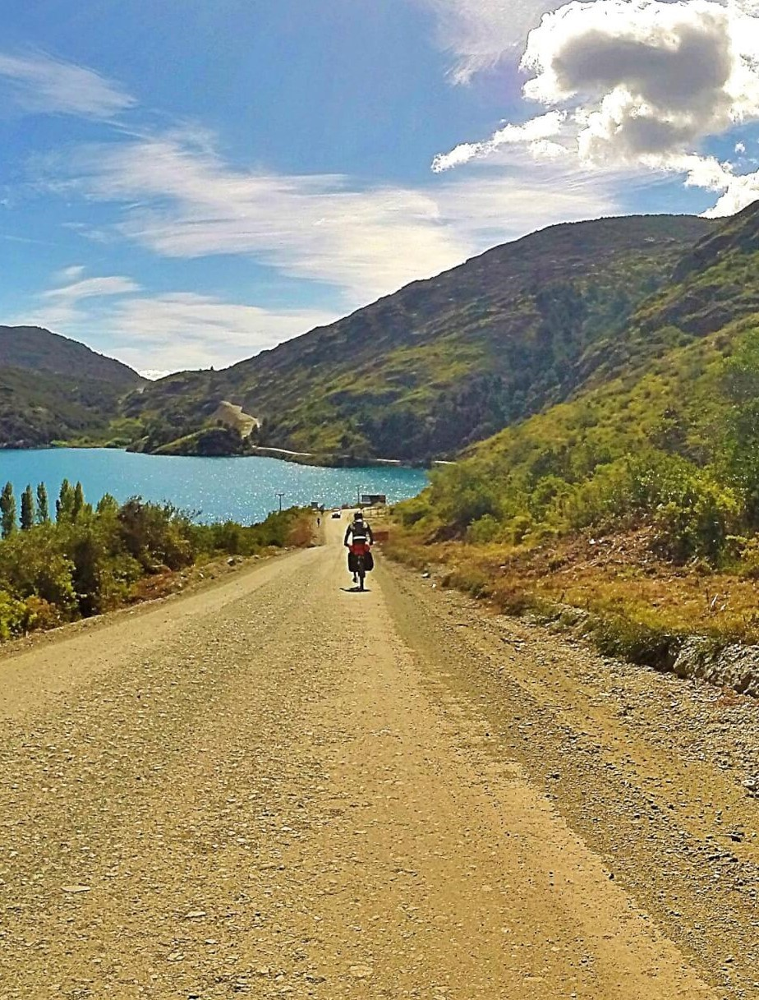

My Future
Next stop Colorado!
Here are my goals, plans for the future, and things I want to learn.
Future Goals:
Working at a National Lab
Working in Guidance, Navigation, and Control -- putting physics and mechanics to the test out in space. I'll be doing this next Summer during an Internship with Lockheed Martin in Colorado (pictured above)!
Work in an Optical Engineering Role
Apply materials science to structural components
Become a Project Lead for a technical project
Future Education
-
Astronautics
I want to learn spaceflight mechanics, general relativity, control mechanisms, and systems engineering as it applies to the aerospace industry. -
Management
I want to learn how to better manage teams so I can better ensure a project's success and improve employee engagement -

Other education
As a lifelong learner, I want to continue to expand my knowledge in physics by taking advanced courses even if not as part of a degree program. I am also fascinated by the human mind and group interactions, and like to study topics in psychology, sociology, and economics in my free time via podcasts, books, and articles.

My Future
Here's what I'm looking forward to doing and accomplishing in the future, and some of my biggest goals for the coming years.
Athletic Goals
- Break 6 minutes in the mile run: I've ran a 5-minute mile in High School, but after an injury that took me out of running for 3.5 years, I've lost a lot of speed. I've been slowly getting back into it, and this is my next milestone!
- Average over 20 mph for the Century Bike Ride (100 miles) around Cayuga Lake in Ithaca, NY
- Complete a Half-Ironman (70.3) triathlon
- Roller ski 100 km in a day (current record 50 miles)
- Summit a mountain over 14,000 ft tall
- Bike up Mount Haleakala in Hawaii
- Break 7 minutes in the 2k erg for rowing as a lightweight
- Ski the Birkie
Future Adventures
- Go on a bike tour of the Carretera Austral -- a 770 mile long gravel road that goes through Southern Chile (Pictured above)
- Do a bike tour around Iceland
- Visit Yosemite National Park and hike around
- Learn how to row Sculls
- Rock climb outdoors at least once
- Go downhill skiing again (I've only been once!)